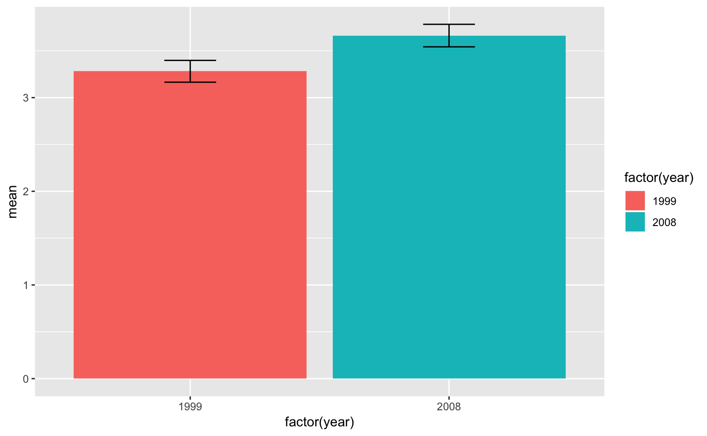

9 データハンドリング
ここまで、ggplot2を使ったデータの可視化を見てきた。ただし、ggplot2で作図をする際、大きな前提条件がある。それは、データを行列の形で用意しなければいけないというものである。つまり、変数を列に、観測値を行に取るようなデータ構造にあらかじめ整形しなければならないということである。
たとえば、今まで使ってきたmtcars、faithfulのデータ構造を改めて見てみよう。
head(mtcars) # 先頭6行## mpg cyl disp hp drat wt qsec vs am gear carb
## Mazda RX4 21.0 6 160 110 3.90 2.620 16.46 0 1 4 4
## Mazda RX4 Wag 21.0 6 160 110 3.90 2.875 17.02 0 1 4 4
## Datsun 710 22.8 4 108 93 3.85 2.320 18.61 1 1 4 1
## Hornet 4 Drive 21.4 6 258 110 3.08 3.215 19.44 1 0 3 1
## Hornet Sportabout 18.7 8 360 175 3.15 3.440 17.02 0 0 3 2
## Valiant 18.1 6 225 105 2.76 3.460 20.22 1 0 3 1head(faithful) # 先頭6行## eruptions waiting
## 1 3.600 79
## 2 1.800 54
## 3 3.333 74
## 4 2.283 62
## 5 4.533 85
## 6 2.883 55どちらも、列に変数名、行に観測値という構造をもっている。
散布図、箱ひげ図、ヒストグラムのように、これらのデータの素値をプロットする際、データハンドリングはあまり問題にならない。しかし、実際は平均値や標準誤差のように、何かしらの統計的処理を施した値をプロットしたいこともある。また、ある1つのグループのデータだけをプロットしたいという場合もある。
可視化の際に直面する問題は、おおよそ以下の3つに大別できるだろう。
1つのグループのデータだけを抽出した上でプロットしたい（たとえば、3条件のうち統制条件だけプロットしたい、など）
素値ではなく、平均値や標準誤差などの統計量をプロットしたい
2つ以上のデータフレームを結合してプロットしたい
などである。
9.1 tidyverse
データハンドリングに使うパッケージ群（複数のパッケージ）はtidyverseと呼ばれており、library(tidyverse)で読み込むことができる。ちなみにggplot2もtidyverseの一部なので、自動的に読み込まれる。下のコードを実行すると色々メッセージが出るかもしれないが、気にしなくて良い。
library(tidyverse) # データハンドリング用のパッケージおよびggplot2を読み込むこの章では、主にggplot2のmpg（自動車のデータ）を使い、データハンドリングを見ていくことにする。
9.2 抽出
9.2.1 データの値で絞り込み
データの値によって絞り込みを行いたい時がある。たとえば、mpgであれば、manufacturerの種類でデータを絞り込みたい（データの行単位で抽出したい）ということである。実際の実験データで言えば、男性／女性のデータのみ抽出したいというような場面である。
このようなときは、filter(抽出条件)を使えば良い。
mpg %>%
filter(manufacturer == "audi") # manufacturerが"audi"のものだけを抽出## # A tibble: 18 x 11
## manufacturer model displ year cyl trans drv cty hwy fl class
## <chr> <chr> <dbl> <int> <int> <chr> <chr> <int> <int> <chr> <chr>
## 1 audi a4 1.8 1999 4 auto… f 18 29 p comp…
## 2 audi a4 1.8 1999 4 manu… f 21 29 p comp…
## 3 audi a4 2 2008 4 manu… f 20 31 p comp…
## 4 audi a4 2 2008 4 auto… f 21 30 p comp…
## 5 audi a4 2.8 1999 6 auto… f 16 26 p comp…
## 6 audi a4 2.8 1999 6 manu… f 18 26 p comp…
## 7 audi a4 3.1 2008 6 auto… f 18 27 p comp…
## 8 audi a4 q… 1.8 1999 4 manu… 4 18 26 p comp…
## 9 audi a4 q… 1.8 1999 4 auto… 4 16 25 p comp…
## 10 audi a4 q… 2 2008 4 manu… 4 20 28 p comp…
## 11 audi a4 q… 2 2008 4 auto… 4 19 27 p comp…
## 12 audi a4 q… 2.8 1999 6 auto… 4 15 25 p comp…
## 13 audi a4 q… 2.8 1999 6 manu… 4 17 25 p comp…
## 14 audi a4 q… 3.1 2008 6 auto… 4 17 25 p comp…
## 15 audi a4 q… 3.1 2008 6 manu… 4 15 25 p comp…
## 16 audi a6 q… 2.8 1999 6 auto… 4 15 24 p mids…
## 17 audi a6 q… 3.1 2008 6 auto… 4 17 25 p mids…
## 18 audi a6 q… 4.2 2008 8 auto… 4 16 23 p mids…ここで、==は「等しい」ということを意味している。大体のプログラミング言語では、==が「等しい」=が「代入する」を意味するものである。
ちなみに、%>%はパイプ演算子と呼ばれており、オブジェクトを次の関数の第一引数に突っ込むという操作を表している。ちょっと何を言っているのか分からないと思うが、あまり気にしなくて良い。何をやっているのか、少なくとも直観的には分かるだろう。今はそれで大丈夫である。
複数条件で絞り込むこともできる。たとえば、「manufacturerが"audi"」かつ「modelが"a4"」の行を抽出したい場合は、条件を&で繋げば良い。
mpg %>%
filter(manufacturer == "audi" & model == "a4")## # A tibble: 7 x 11
## manufacturer model displ year cyl trans drv cty hwy fl class
## <chr> <chr> <dbl> <int> <int> <chr> <chr> <int> <int> <chr> <chr>
## 1 audi a4 1.8 1999 4 auto(… f 18 29 p comp…
## 2 audi a4 1.8 1999 4 manua… f 21 29 p comp…
## 3 audi a4 2 2008 4 manua… f 20 31 p comp…
## 4 audi a4 2 2008 4 auto(… f 21 30 p comp…
## 5 audi a4 2.8 1999 6 auto(… f 16 26 p comp…
## 6 audi a4 2.8 1999 6 manua… f 18 26 p comp…
## 7 audi a4 3.1 2008 6 auto(… f 18 27 p comp…「manufacturerが"audi"」または「modelが"a4"」の行を抽出したい場合は、条件を|で繋げば良い。
mpg %>%
filter(manufacturer == "audi" | model == "a4")## # A tibble: 18 x 11
## manufacturer model displ year cyl trans drv cty hwy fl class
## <chr> <chr> <dbl> <int> <int> <chr> <chr> <int> <int> <chr> <chr>
## 1 audi a4 1.8 1999 4 auto… f 18 29 p comp…
## 2 audi a4 1.8 1999 4 manu… f 21 29 p comp…
## 3 audi a4 2 2008 4 manu… f 20 31 p comp…
## 4 audi a4 2 2008 4 auto… f 21 30 p comp…
## 5 audi a4 2.8 1999 6 auto… f 16 26 p comp…
## 6 audi a4 2.8 1999 6 manu… f 18 26 p comp…
## 7 audi a4 3.1 2008 6 auto… f 18 27 p comp…
## 8 audi a4 q… 1.8 1999 4 manu… 4 18 26 p comp…
## 9 audi a4 q… 1.8 1999 4 auto… 4 16 25 p comp…
## 10 audi a4 q… 2 2008 4 manu… 4 20 28 p comp…
## 11 audi a4 q… 2 2008 4 auto… 4 19 27 p comp…
## 12 audi a4 q… 2.8 1999 6 auto… 4 15 25 p comp…
## 13 audi a4 q… 2.8 1999 6 manu… 4 17 25 p comp…
## 14 audi a4 q… 3.1 2008 6 auto… 4 17 25 p comp…
## 15 audi a4 q… 3.1 2008 6 manu… 4 15 25 p comp…
## 16 audi a6 q… 2.8 1999 6 auto… 4 15 24 p mids…
## 17 audi a6 q… 3.1 2008 6 auto… 4 17 25 p mids…
## 18 audi a6 q… 4.2 2008 8 auto… 4 16 23 p mids…「manufacturerが"audi"」でもなく「modelが"a4"」でもない行を抽出したい場合は、条件を!()で囲めば良い。!()は論理値を反転させる演算子である29。
mpg %>%
filter(!(manufacturer == "audi" | model == "a4"))## # A tibble: 216 x 11
## manufacturer model displ year cyl trans drv cty hwy fl class
## <chr> <chr> <dbl> <int> <int> <chr> <chr> <int> <int> <chr> <chr>
## 1 chevrolet c150… 5.3 2008 8 auto… r 14 20 r suv
## 2 chevrolet c150… 5.3 2008 8 auto… r 11 15 e suv
## 3 chevrolet c150… 5.3 2008 8 auto… r 14 20 r suv
## 4 chevrolet c150… 5.7 1999 8 auto… r 13 17 r suv
## 5 chevrolet c150… 6 2008 8 auto… r 12 17 r suv
## 6 chevrolet corv… 5.7 1999 8 manu… r 16 26 p 2sea…
## 7 chevrolet corv… 5.7 1999 8 auto… r 15 23 p 2sea…
## 8 chevrolet corv… 6.2 2008 8 manu… r 16 26 p 2sea…
## 9 chevrolet corv… 6.2 2008 8 auto… r 15 25 p 2sea…
## 10 chevrolet corv… 7 2008 8 manu… r 15 24 p 2sea…
## # … with 206 more rows9.2.2 データの列で絞り込み
では、列方向で抽出するにはどうすれば良いのだろうか？ たとえば、mpgで言えば、manufacturerとmodelとtransとdrvの列を抽出したいというような状況である。
このようなときは、select(抽出したい列名)を使えば良い。抽出したい列名は、1つだけに限らず、何個書いても問題ない。
mpg %>%
select(manufacturer, model, trans, drv) # 4つの列を抽出## # A tibble: 234 x 4
## manufacturer model trans drv
## <chr> <chr> <chr> <chr>
## 1 audi a4 auto(l5) f
## 2 audi a4 manual(m5) f
## 3 audi a4 manual(m6) f
## 4 audi a4 auto(av) f
## 5 audi a4 auto(l5) f
## 6 audi a4 manual(m5) f
## 7 audi a4 auto(av) f
## 8 audi a4 quattro manual(m5) 4
## 9 audi a4 quattro auto(l5) 4
## 10 audi a4 quattro manual(m6) 4
## # … with 224 more rowsselect()では、「A列からG列まで」というような抽出も可能である。
mpg %>%
select(manufacturer:drv) # manufacturerからdrvまでの7列を抽出## # A tibble: 234 x 7
## manufacturer model displ year cyl trans drv
## <chr> <chr> <dbl> <int> <int> <chr> <chr>
## 1 audi a4 1.8 1999 4 auto(l5) f
## 2 audi a4 1.8 1999 4 manual(m5) f
## 3 audi a4 2 2008 4 manual(m6) f
## 4 audi a4 2 2008 4 auto(av) f
## 5 audi a4 2.8 1999 6 auto(l5) f
## 6 audi a4 2.8 1999 6 manual(m5) f
## 7 audi a4 3.1 2008 6 auto(av) f
## 8 audi a4 quattro 1.8 1999 4 manual(m5) 4
## 9 audi a4 quattro 1.8 1999 4 auto(l5) 4
## 10 audi a4 quattro 2 2008 4 manual(m6) 4
## # … with 224 more rows指定した列を除外することもできるselect(-列名)とすれば良い。
mpg %>%
select(-manufacturer) # manufacturerを除外## # A tibble: 234 x 10
## model displ year cyl trans drv cty hwy fl class
## <chr> <dbl> <int> <int> <chr> <chr> <int> <int> <chr> <chr>
## 1 a4 1.8 1999 4 auto(l5) f 18 29 p compact
## 2 a4 1.8 1999 4 manual(m5) f 21 29 p compact
## 3 a4 2 2008 4 manual(m6) f 20 31 p compact
## 4 a4 2 2008 4 auto(av) f 21 30 p compact
## 5 a4 2.8 1999 6 auto(l5) f 16 26 p compact
## 6 a4 2.8 1999 6 manual(m5) f 18 26 p compact
## 7 a4 3.1 2008 6 auto(av) f 18 27 p compact
## 8 a4 quattro 1.8 1999 4 manual(m5) 4 18 26 p compact
## 9 a4 quattro 1.8 1999 4 auto(l5) 4 16 25 p compact
## 10 a4 quattro 2 2008 4 manual(m6) 4 20 28 p compact
## # … with 224 more rows9.3 追加
9.3.1 新しい列を追加
データフレームに新しい列を作るには、mutate(新しく作る列名 = 値)を使えば良い。
mpg %>%
mutate(one = 1) # 最後尾にoneという列を追加した## # A tibble: 234 x 12
## manufacturer model displ year cyl trans drv cty hwy fl class
## <chr> <chr> <dbl> <int> <int> <chr> <chr> <int> <int> <chr> <chr>
## 1 audi a4 1.8 1999 4 auto… f 18 29 p comp…
## 2 audi a4 1.8 1999 4 manu… f 21 29 p comp…
## 3 audi a4 2 2008 4 manu… f 20 31 p comp…
## 4 audi a4 2 2008 4 auto… f 21 30 p comp…
## 5 audi a4 2.8 1999 6 auto… f 16 26 p comp…
## 6 audi a4 2.8 1999 6 manu… f 18 26 p comp…
## 7 audi a4 3.1 2008 6 auto… f 18 27 p comp…
## 8 audi a4 q… 1.8 1999 4 manu… 4 18 26 p comp…
## 9 audi a4 q… 1.8 1999 4 auto… 4 16 25 p comp…
## 10 audi a4 q… 2 2008 4 manu… 4 20 28 p comp…
## # … with 224 more rows, and 1 more variable: one <dbl>上の例ではoneという列を作り、すべての行を1で埋めたが、これはあまり実践的ではない。
mutate()が力を発揮するのは、特にif_else()という関数と組み合わせたときである。たとえば、displ（排気量）の値が3未満ならgood、3以上ならbadという列（engine）を作りたい場合、以下のように書けば良い。
mpg %>%
mutate(engine = if_else(displ < 3, "good", "bad"))## # A tibble: 234 x 12
## manufacturer model displ year cyl trans drv cty hwy fl class
## <chr> <chr> <dbl> <int> <int> <chr> <chr> <int> <int> <chr> <chr>
## 1 audi a4 1.8 1999 4 auto… f 18 29 p comp…
## 2 audi a4 1.8 1999 4 manu… f 21 29 p comp…
## 3 audi a4 2 2008 4 manu… f 20 31 p comp…
## 4 audi a4 2 2008 4 auto… f 21 30 p comp…
## 5 audi a4 2.8 1999 6 auto… f 16 26 p comp…
## 6 audi a4 2.8 1999 6 manu… f 18 26 p comp…
## 7 audi a4 3.1 2008 6 auto… f 18 27 p comp…
## 8 audi a4 q… 1.8 1999 4 manu… 4 18 26 p comp…
## 9 audi a4 q… 1.8 1999 4 auto… 4 16 25 p comp…
## 10 audi a4 q… 2 2008 4 manu… 4 20 28 p comp…
## # … with 224 more rows, and 1 more variable: engine <chr>9.3.2 列名を変更
新しい列を作りたいわけではないが、列名を変えたい場合がある。このようなときは、rename(新しい列名 = 古い列名)を使えば良い。
mpg %>%
rename(nen = year) # yearをnenに変更## # A tibble: 234 x 11
## manufacturer model displ nen cyl trans drv cty hwy fl class
## <chr> <chr> <dbl> <int> <int> <chr> <chr> <int> <int> <chr> <chr>
## 1 audi a4 1.8 1999 4 auto… f 18 29 p comp…
## 2 audi a4 1.8 1999 4 manu… f 21 29 p comp…
## 3 audi a4 2 2008 4 manu… f 20 31 p comp…
## 4 audi a4 2 2008 4 auto… f 21 30 p comp…
## 5 audi a4 2.8 1999 6 auto… f 16 26 p comp…
## 6 audi a4 2.8 1999 6 manu… f 18 26 p comp…
## 7 audi a4 3.1 2008 6 auto… f 18 27 p comp…
## 8 audi a4 q… 1.8 1999 4 manu… 4 18 26 p comp…
## 9 audi a4 q… 1.8 1999 4 auto… 4 16 25 p comp…
## 10 audi a4 q… 2 2008 4 manu… 4 20 28 p comp…
## # … with 224 more rows9.4 集約
統計量の算出に使えるのは、group_by()とsummarise()である。
まずはsummarise()を見てみよう。書き方はsummarise(新しい列名 = 関数)である。同時に複数の関数を使うこともできる。たとえば、displの平均値、標準偏差、最小値、最大値を計算したい場合、以下のように書けば良い。
mpg %>%
summarise(mean_displ = mean(displ),
sd_displ = sd(displ),
min_displ = min(displ),
max_displ = max(displ))## # A tibble: 1 x 4
## mean_displ sd_displ min_displ max_displ
## <dbl> <dbl> <dbl> <dbl>
## 1 3.47 1.29 1.6 7このように、summarise()を使うと、データ全体の統計量を計算することができる。
しかし、実際の場面で全体の統計量を計算することは少なく、むしろグループごとの統計量を計算したいという場面のほうが圧倒的に多いだろう。
このようなときは、group_by(グルーピングの変数)を使うことができる。たとえば、yearごとにsummarise()を実行するには、以下のように書けば良い。
mpg %>%
group_by(year) %>%
summarise(mean_displ = mean(displ),
sd_displ = sd(displ),
min_displ = min(displ),
max_displ = max(displ))## # A tibble: 2 x 5
## year mean_displ sd_displ min_displ max_displ
## <int> <dbl> <dbl> <dbl> <dbl>
## 1 1999 3.28 1.26 1.6 6.5
## 2 2008 3.66 1.30 1.8 7製造年（1999年と2008年）ごとに統計量を計算することができた。
9.5 結合
ここでは、mpgではなく、架空のデータセットを作ってみよう。たとえば、以下のような状況を考えてみてほしい。
たかし君とはなこさんは、以前見たテレビドラマを思い出して「足袋を履いたときと、裸足のときとで、どっちが走るのが早くなるだろうか？」と疑問に思いました。そこで2人は、5日間のうち3日は足袋を履いて、2日は裸足で自宅から学校まで走り、到着までの所要時間を測りました。
2人の毎日の所要時間データはcommuteというデータフレームとして保存しよう。
commute = data.frame(
"name" = c("takashi","takashi","takashi","takashi","takashi","hanako","hanako","hanako","hanako","hanako"),
"day" = c(1,2,3,4,5,1,2,3,4,5),
"time" = c(10,13,12,11,14,9,15,14,10,16)
)
commute## name day time
## 1 takashi 1 10
## 2 takashi 2 13
## 3 takashi 3 12
## 4 takashi 4 11
## 5 takashi 5 14
## 6 hanako 1 9
## 7 hanako 2 15
## 8 hanako 3 14
## 9 hanako 4 10
## 10 hanako 5 16一方、足袋だったか裸足だったかは、shoesというデータフレームとして保存しよう。
shoes = data.frame(
"day" = c(1,2,3,4,5),
"shoes" = c("tabi","tabi","bare","tabi","bare")
)
shoes## day shoes
## 1 1 tabi
## 2 2 tabi
## 3 3 bare
## 4 4 tabi
## 5 5 bareこのようなとき、所要時間のデータと毎日の靴のデータを関係づけて可視化したいものである。しかし、別々のデータフレームとして保存されているので、今のままでは可視化できない。
このようなときは、inner_join()という関数を使えば良い。書き方は、inner_join(結合するデータ, by = "共通の列名")である。今回は、dayという変数が共通なので、以下のように書けば良い。
commute %>%
inner_join(shoes, by = "day")## name day time shoes
## 1 takashi 1 10 tabi
## 2 takashi 2 13 tabi
## 3 takashi 3 12 bare
## 4 takashi 4 11 tabi
## 5 takashi 5 14 bare
## 6 hanako 1 9 tabi
## 7 hanako 2 15 tabi
## 8 hanako 3 14 bare
## 9 hanako 4 10 tabi
## 10 hanako 5 16 bare無事2つのデータを結合することができた。
しかし、いつも共通の列名があるわけではない。たとえば、shoesが以下のようになっていたとしよう。
shoes = data.frame(
"hinichi" = c(1,2,3,4,5), # "day"ではなく、"hinichi"という列名
"shoes" = c("tabi","tabi","bare","tabi","bare")
)
shoes## hinichi shoes
## 1 1 tabi
## 2 2 tabi
## 3 3 bare
## 4 4 tabi
## 5 5 bareこのようなときは、以下のように書けば良い。
commute %>%
inner_join(shoes, by = c("day" = "hinichi")) # dayとhinichiを対応づけている## name day time shoes
## 1 takashi 1 10 tabi
## 2 takashi 2 13 tabi
## 3 takashi 3 12 bare
## 4 takashi 4 11 tabi
## 5 takashi 5 14 bare
## 6 hanako 1 9 tabi
## 7 hanako 2 15 tabi
## 8 hanako 3 14 bare
## 9 hanako 4 10 tabi
## 10 hanako 5 16 bareこの他にもleft_join()、right_join()などの関数がある。詳しくは、https://dplyr.tidyverse.org/reference/join.html を見てほしい。
9.6 ロングフォーマット
以下の架空のデータフレーム（X, Y, Zという3つの株価の増減比の時系列データ）があるとしよう。
set.seed(1)
stocks = data.frame(
time = as.Date('2009-01-01') + 0:9,
X = rnorm(10, 0, 1),
Y = rnorm(10, 0, 2),
Z = rnorm(10, 0, 4)
)
stocks## time X Y Z
## 1 2009-01-01 -0.6264538 3.02356234 3.6759095
## 2 2009-01-02 0.1836433 0.77968647 3.1285452
## 3 2009-01-03 -0.8356286 -1.24248116 0.2982599
## 4 2009-01-04 1.5952808 -4.42939977 -7.9574068
## 5 2009-01-05 0.3295078 2.24986184 2.4793030
## 6 2009-01-06 -0.8204684 -0.08986722 -0.2245150
## 7 2009-01-07 0.4874291 -0.03238053 -0.6231820
## 8 2009-01-08 0.7383247 1.88767242 -5.8830095
## 9 2009-01-09 0.5757814 1.64244239 -1.9126002
## 10 2009-01-10 -0.3053884 1.18780264 1.6717662このとき、3つの株価の時系列変化をプロットしてみたいが、このままではうまくいかない。なぜなら、データがロングフォーマット（列に変数名、行にデータ）という形式になっていないからである。このようなデータをワイドフォーマットと言う。
データをロングフォーマットに変えるには、gather()を使えば良い。書き方は、gather(key = "新しく作るラベル", value = "新しく作る数値", ロングにしたい列（複数個）)である。文章ではわかりにくいと思うので、以下のコードを見てほしい。
stocks_long = stocks %>%
gather(key = stock, value = price, X, Y, Z) # X:Zで指定してもOK
stocks_long## time stock price
## 1 2009-01-01 X -0.62645381
## 2 2009-01-02 X 0.18364332
## 3 2009-01-03 X -0.83562861
## 4 2009-01-04 X 1.59528080
## 5 2009-01-05 X 0.32950777
## 6 2009-01-06 X -0.82046838
## 7 2009-01-07 X 0.48742905
## 8 2009-01-08 X 0.73832471
## 9 2009-01-09 X 0.57578135
## 10 2009-01-10 X -0.30538839
## 11 2009-01-01 Y 3.02356234
## 12 2009-01-02 Y 0.77968647
## 13 2009-01-03 Y -1.24248116
## 14 2009-01-04 Y -4.42939977
## 15 2009-01-05 Y 2.24986184
## 16 2009-01-06 Y -0.08986722
## 17 2009-01-07 Y -0.03238053
## 18 2009-01-08 Y 1.88767242
## 19 2009-01-09 Y 1.64244239
## 20 2009-01-10 Y 1.18780264
## 21 2009-01-01 Z 3.67590949
## 22 2009-01-02 Z 3.12854520
## 23 2009-01-03 Z 0.29825993
## 24 2009-01-04 Z -7.95740678
## 25 2009-01-05 Z 2.47930299
## 26 2009-01-06 Z -0.22451496
## 27 2009-01-07 Z -0.62318203
## 28 2009-01-08 Z -5.88300954
## 29 2009-01-09 Z -1.91260022
## 30 2009-01-10 Z 1.67176624ロングフォーマットにすることができた。
元のワイドフォーマットに戻したい場合は、spread()を使えば良い。書き方はspread(key = ワイドにする列, value = ワイドにする値)である。これも文章ではわかりにくいと思うので、以下のコードを見てほしい。
stocks_long %>%
spread(stock, price)## time X Y Z
## 1 2009-01-01 -0.6264538 3.02356234 3.6759095
## 2 2009-01-02 0.1836433 0.77968647 3.1285452
## 3 2009-01-03 -0.8356286 -1.24248116 0.2982599
## 4 2009-01-04 1.5952808 -4.42939977 -7.9574068
## 5 2009-01-05 0.3295078 2.24986184 2.4793030
## 6 2009-01-06 -0.8204684 -0.08986722 -0.2245150
## 7 2009-01-07 0.4874291 -0.03238053 -0.6231820
## 8 2009-01-08 0.7383247 1.88767242 -5.8830095
## 9 2009-01-09 0.5757814 1.64244239 -1.9126002
## 10 2009-01-10 -0.3053884 1.18780264 1.6717662ワイドフォーマットに戻すことができた。
9.7 データファイルの読み込み
実際のデータファイル（たとえばcsv、tsv、xlsxなどのスプレッドシート）は、read_csv()やread_tsv()、readxlパッケージのread_excel()で読み込むことができる。
データの読み込みについては、各人の都合があると思うので、周りの人に尋ねてみてほしい30。
9.8 ggplot2と一緒に使う
パイプ演算子（%>%）を使うと、以下のようにデータハンドリングと可視化をシームレスにつなげることができる。下の例では、平均値と標準誤差をグループごとに計算し、棒グラフとエラーバーを描いている。
mpg %>%
group_by(year) %>% # yearごとに
summarise(mean = mean(displ),
se = sd(displ) / sqrt(n())) %>% # 平均値と標準誤差を計算；n()はデータの個数を数える関数
ggplot(aes(factor(year), mean, fill = factor(year))) + # dataは「%>%」で自動的に流し込まれているので、指定しなくて良い
geom_bar(stat = "identity") +
geom_errorbar(aes(ymin = mean - se, ymax = mean + se), width = 0.2)